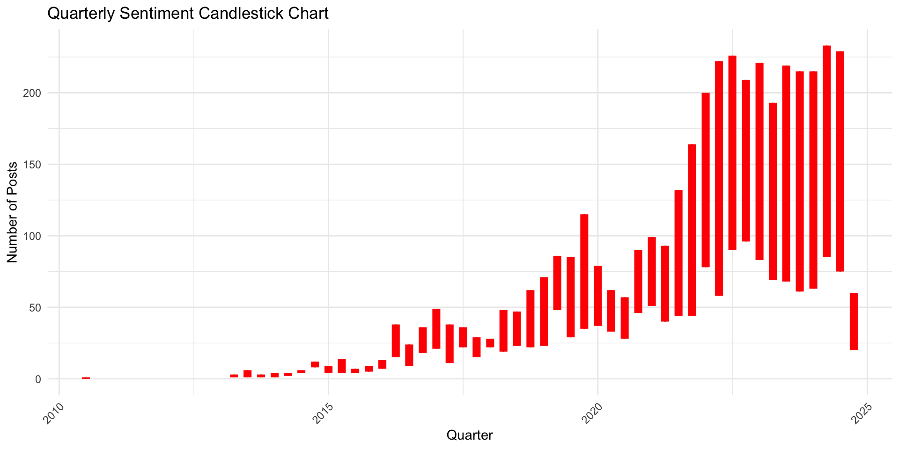

Rows: 5646 Columns: 13
── Column specification ────────────────────────────────────────────────────────
Delimiter: ","
chr (6): post_url, matched_keyword, overall_sentiment_post, sentiment_comme...
dbl (6): comments, overall_sentiment_score_post, post_upvote_score, comment...
date (1): date_utc
ℹ Use `spec()` to retrieve the full column specification for this data.
ℹ Specify the column types or set `show_col_types = FALSE` to quiet this message.
Post Data Visualization
library(dplyr)
Attaching package: 'dplyr'
The following objects are masked from 'package:stats':
filter, lag
The following objects are masked from 'package:base':
intersect, setdiff, setequal, union
upset(set_matrix, nsets =14, # Display all 14 setsorder.by ="freq", # Order by frequency of intersections, # Order by increasing frequencymain.bar.color ="black", # Main bar colorsets.bar.color ="red", # Set bar colormatrix.color ="black", # Matrix colorset_size.show =TRUE,mainbar.y.label ="Intersection Size", # Label for the intersection bar chartsets.x.label ="Set Size",text.scale =0.8 )
library(dplyr)library(tidyr)library(UpSetR)# Function to create and print UpSetR plots for each subredditupset_sub_print <-function(data) { subreddits <-unique(data$subreddit) # Get unique subreddits# Iterate over each subredditfor (i in1:length(subreddits)) {# Filter data for the current subreddit p_data <- data %>%filter(subreddit == subreddits[i]) sets <-strsplit(p_data$matched_keyword, ",") # Split matched keywords by comma keywords <-unique(unlist(sets)) # Get unique keywords# Create a binary matrix for the set intersections set_matrix <-data.frame(matrix(0, nrow =nrow(p_data), ncol =length(keywords)))colnames(set_matrix) <- keywords# Fill in the matrix with 1s where keywords are presentfor (j inseq_along(sets)) { set_matrix[j, match(trimws(sets[[j]]), keywords)] <-1 }# Print message to confirm which subreddit is being processedprint(paste("Generating plot for subreddit:", subreddits[i]))# Generate the UpSet plot for the current subreddit a <-upset(set_matrix,nsets =length(keywords), # Display all setsorder.by ="freq", # Order by frequency of intersectionsmain.bar.color ="black", # Main bar colorsets.bar.color ="red", # Set bar colormatrix.color ="black", # Matrix colorset_size.show =TRUE,mainbar.y.label ="Intersection Size", # Label for the intersection bar chartsets.x.label ="Set Size",text.scale =1)print(a) }}# Example usage:# Assuming 'reddit_sentiment' is your data frameupset_sub_print(reddit_sentiment)
[1] "Generating plot for subreddit: fuckcars"
[1] "Generating plot for subreddit: teslamodel3"
[1] "Generating plot for subreddit: teslamotors"
[1] "Generating plot for subreddit: rivian"
[1] "Generating plot for subreddit: electricvehicles"
library(dplyr)library(ggplot2)total_posts_barplot <-function(data) { post_count <- data %>%group_by(subreddit) %>%summarise(total_posts =n())ggplot(post_count, aes(x =reorder(subreddit, -total_posts), y = total_posts)) +geom_bar(stat ="identity", fill ="steelblue") +geom_text(aes(label = total_posts), vjust =-0.3, color ="black") +labs(title ="Total Number of Posts per Subreddit", x ="Subreddit", y ="Total Posts") +theme_minimal() +theme(axis.text.x =element_text(angle =45, hjust =1)) }total_posts_barplot(reddit_sentiment)
comment_data <- reddit_sentiment %>%select(subreddit, comments)total_comment <- comment_data %>%group_by(subreddit) %>%summarize(sum(comments))total_comment %>%ggplot(aes(x=reorder(subreddit, -`sum(comments)`), y =`sum(comments)`))+geom_bar(stat ='identity', fill ='steelblue')+labs(title ='Comment Per Subreddit',x ='Subreddit',y ='Total Comment')+theme_minimal()
The following objects are masked from 'package:base':
date, intersect, setdiff, union
# Convert date_utc to Date formatreddit_sentiment$date_utc <-as.Date(reddit_sentiment$date_utc)# Extract year and month, then count the number of posts per monthposts_per_month <- reddit_sentiment %>%mutate(month =floor_date(date_utc, "month")) %>%group_by(month) %>%summarise(number_of_posts =n())# Create the line chartggplot(posts_per_month, aes(x = month, y = number_of_posts)) +geom_line(color ="black") +geom_point(color ="red") +labs(title ="Number of Posts by Month", x ="Month", y ="Number of Posts") +theme_minimal() +theme(axis.text.x =element_text(angle =45, hjust =1))
── Conflicts ────────────────────────────────────────── tidyquant_conflicts() ──
✖ zoo::as.Date() masks base::as.Date()
✖ zoo::as.Date.numeric() masks base::as.Date.numeric()
✖ dplyr::filter() masks stats::filter()
✖ xts::first() masks dplyr::first()
✖ dplyr::lag() masks stats::lag()
✖ xts::last() masks dplyr::last()
✖ PerformanceAnalytics::legend() masks graphics::legend()
✖ quantmod::summary() masks base::summary()
ℹ Use the conflicted package (<http://conflicted.r-lib.org/>) to force all conflicts to become errors
quarterly_sentiment_counts <- reddit_sentiment %>%mutate(quarter =floor_date(date_utc, "quarter")) %>%group_by(quarter, overall_sentiment_post) %>%summarise(count =n()) %>%spread(key = overall_sentiment_post, value = count, fill =0)
`summarise()` has grouped output by 'quarter'. You can override using the
`.groups` argument.
# Create a candlestick chartggplot(quarterly_sentiment_counts, aes(x = quarter)) +geom_linerange(aes(ymin =pmin(POSITIVE, NEGATIVE), ymax =pmax(POSITIVE, NEGATIVE)), color ="black", size =0.5) +geom_segment(aes(y = NEGATIVE, yend = POSITIVE, xend = quarter), color =ifelse(quarterly_sentiment_counts$POSITIVE >= quarterly_sentiment_counts$NEGATIVE, "green", "red"), size =3) +labs(title ="Quarterly Sentiment Candlestick Chart", x ="Quarter", y ="Number of Posts") +theme_minimal() +theme(axis.text.x =element_text(angle =45, hjust =1))
Warning: Using `size` aesthetic for lines was deprecated in ggplot2 3.4.0.
ℹ Please use `linewidth` instead.

positive_matched <- reddit_sentiment %>%select(matched_keyword, overall_sentiment) %>%filter(overall_sentiment =="POSITIVE")positive_matched$matched_keyword <-as.character(positive_matched$matched_keyword)sets <-strsplit(positive_matched$matched_keyword, ",")keywords <-unique(unlist(sets))set_matrix <-data.frame(matrix(0, nrow =length(positive_matched$matched_keyword), ncol =length(keywords)))colnames(set_matrix) <- keywordsfor (i inseq_along(sets)) { set_matrix[i, match(trimws(sets[[i]]), keywords)] <-1}upset(set_matrix, nsets =14, # Display all 14 setsorder.by ="freq", # Order by frequency of intersections, # Order by increasing frequencymain.bar.color ="black", # Main bar colorsets.bar.color ="red", # Set bar colormatrix.color ="black", # Matrix colorset_size.show =TRUE,mainbar.y.label ="Intersection Size", # Label for the intersection bar chartsets.x.label ="Set Size",text.scale =0.4 )
negative_matched <- reddit_sentiment %>%select(matched_keyword, overall_sentiment) %>%filter(overall_sentiment =="NEGATIVE")negative_matched$matched_keyword <-as.character(negative_matched$matched_keyword)sets <-strsplit(negative_matched$matched_keyword, ",")keywords <-unique(unlist(sets))set_matrix <-data.frame(matrix(0, nrow =length(negative_matched$matched_keyword), ncol =length(keywords)))colnames(set_matrix) <- keywordsfor (i inseq_along(sets)) { set_matrix[i, match(trimws(sets[[i]]), keywords)] <-1}upset(set_matrix, nsets =14, # Display all 14 setsorder.by ="freq", # Order by frequency of intersections, # Order by increasing frequencymain.bar.color ="black", # Main bar colorsets.bar.color ="red", # Set bar colormatrix.color ="black", # Matrix colorset_size.show =TRUE,mainbar.y.label ="Intersection Size", # Label for the intersection bar chartsets.x.label ="Set Size",text.scale =0.4 )